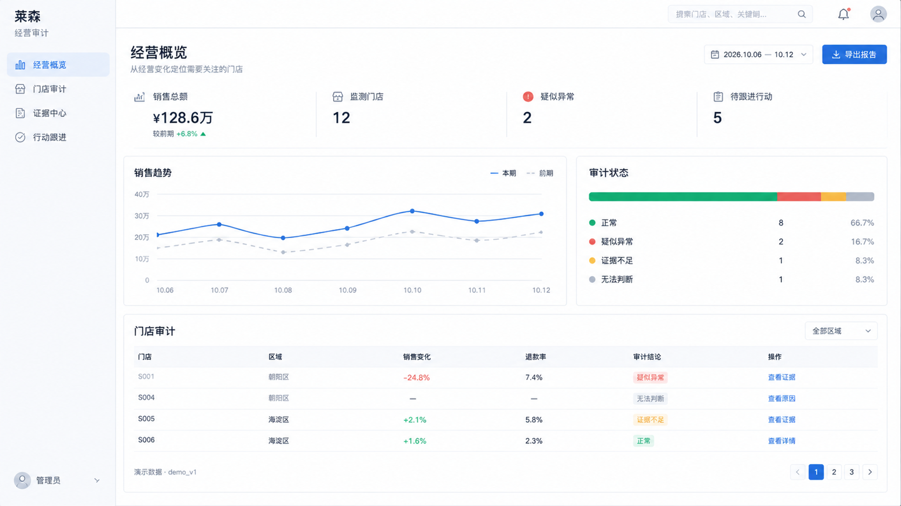
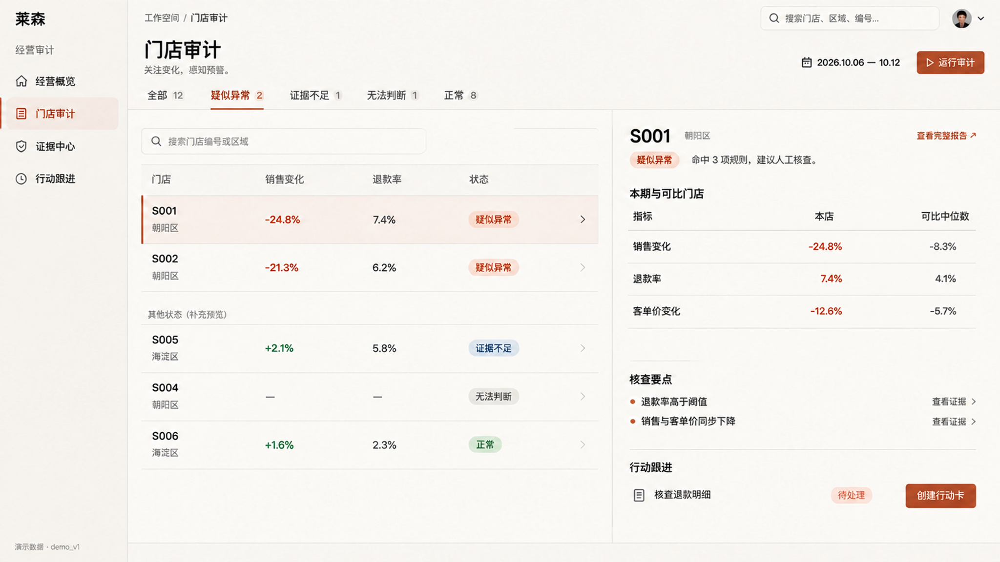

拒绝“只画图不归因”与“大模型算错账”——围绕 ① 哪些门店/区域需关注？ ② 差距来自哪、证据是什么？ ③ 现在做什么、何时复核有效？ 打造零幻觉闭环。


覆盖长春 5 大城区（朝阳 / 南关 / 宽城 / 二道 / 绿园）、5 家核心标杆店与 21 家全量门店 × 42 天日经营流水与设备心跳
实时掌握 105.4万 营收、95.2% 设备在线率、42天日销售斜坡与长春 GIS 风险地图。
如 A店/S001 退款率飙至 7.0%（同城中位数 2.1%）、订单跌 31%，需快速定位症结。
对比朝阳区（86.5分 / 回本 8.4月）与南关区（租金缺失不瞎猜），严控选址投资风险。
冷柜断网、温控失联或支付掉线时，无需人工盯盘即可触发告警、升级并唤醒审计。
派发“24h内抽查20笔退款单”任务，并在下一周期自动核验 refund_rate 是否达标回落。
S001 自 10月6日起连续 3 天渐进式滑坡。S004 退款字段断报（空值率 33%），传统报表直接算作 0 异常，掩盖严重故障。AVG(daily_ratio) 平均每日比率，违背“先 SUM 聚合再算比率”铁律。< 3 家 或南关区缺租金数据时，通用 AI 仍会编造回本周期与根因。owner_role）、缺 24h 时限与证据绑定。+2pt 以内。A（前端五视图）/ B（确定性数据与规则层）/ C（LangGraph 智能体与 API）基于冻结契约 API Contract v0.1 并行解耦协作
先聚合后算比率、NULLIF 零保护、按门店中位数算区域 ROI；严格执行 unavailable → insufficient → possible → none 判定序，彻底消灭假阴性。
严禁写 SQL 或改阈值！输出护栏通过 collectAllowedNumbers 逐字比对工具证据池，出现任何未授权数字立即熔断回退，保障 100% 零数值幻觉。
静态前缀 deepFreeze 零插值、Append-Only 消息轨迹、禁滑动窗口截断、采用 SHA-256 持久化摘要压缩，兼顾高缓存命中率与跨轮次指代消解。
设备离线 5 分钟自动告警并唤醒 Agent 审计，15 分钟未确认自动升级；经营动作需人工确认并在下一周期复核指标。
| 核心对比维度 | 传统 BI 报表系统 | 传统通用 AI (Text-to-SQL) | 莱森购 Retail Intelligence Agent |
|---|---|---|---|
| 1. 口径与计算准确性 | 静态 SQL 聚合，易掩盖斜坡下滑，无双因子自动拆解 | LLM 自由写 SQL 易平均每日比率、算错口径，结果不可复现 | Contract-First 确定性计算：先 SUM 再算比率，区域利润/回本取门店中位数，0 算账幻觉 |
| 2. 数据缺失与可比防呆 | 字段断报常显示为 0，造成“无异常”的致命假阴性 | 样本不足或缺成本时仍强行编造回本周期与确定性根因 | S004 缺失熔断 + 两层逐指标可比准入：少于 3 家返回 insufficient，缺租金返回 null |
| 3. 安全边界与防幻觉 | 无自然语言交互，仅支持固定筛选器查询 | 易受 Prompt 注入越权，总结文本常夹带未查询的幻觉数字 | 7 白名单工具 + 双向护栏：拦截 SQL 注入/改阈值，collectAllowedNumbers 零幻觉校验 |
| 4. 记忆与上下文工程 | 无上下文记忆，每次筛选互不关联 | 系统提示词插值破坏缓存，用 slice(-N) 截断丢失历史 |
KV Cache 六铁律 + 三层记忆：静态前缀冻结、SHA-256 压缩复用、支持“帮它派单”指代消解 |
| 5. 触发方式与执行闭环 | 纯被动看图，无任务派发与效果追踪 | 被动一问一答，聊完即止，无 SLA 升级与复核机制 | 主动监控 Loop + 人机复核闭环：心跳离线唤醒 Agent 审计，人工确认派单并按周期复核关闭/升级 |
所有金额与数量先聚合再算比率，每个指标、排名与异常结论均携带 evidence_ids、data_version 与 trace_id
order_change_pct（订单数）与 aov_change_pct（客单价），避免把规模波动误判为效率问题。Score = 0.35×需求 + 0.25×竞争 + 0.25×毛利 - 0.15×成本 归一化评分；区域月利润与回本周期取区域内门店中位数（防止沦为门店数量比较）；南关区缺长租成本时强制返回 estimatedPaybackMonths = null。S004 自 10月6日起退款字段断报（空值率 33% > 20%），单店审计严格触发 unavailable 熔断保护；但在同区对标时按逐指标准入保留其完整的销售/订单数据，防止朝阳区可比池跌破 min_peers = 3 临界值。≥40% 门店同步异常且离散度低时，自动标记为“区域性波动”，严禁直接归咎于单店店长。--offline) / Supabase PostgreSQL 三路径；云端内置 store_operations_daily、region_market_inputs、tasks_and_traces 及 knowledge_wiki（统一承载语义规则 semantic_rule、处置剧本 sop_playbook、商圈档案 region_profile 与预留 1536 维向量的历史案例）。python tools/verify_local.py 与 npm run validate:contracts 自动化校验全量指标与契约 Fixture。
兼容 OpenAI / Anthropic 双协议，无外部模型密钥或断网时自动无缝切换至 100% 确定性规划与总结回退引擎
AgentStateAnnotationcontextBuilder、memoryManagercollectAllowedNumbers 防幻觉StateGraph，挂载 Checkpointer 与 Store/api/v1/* 网关、全链路 Trace 回放与契约自检STATIC_SYSTEM_MESSAGE 与固定顺序 7 工具 Schema deepFreeze 字节级锁定，零运行时变量插值；
query、窗口、记忆、工具结果）一律 Append-Only 追加至消息尾部；
system / user / assistant / tool 四角色与 tool_call_id；
.slice(-N) 截断历史！超阈值时调用 compactMessagesIfNeeded 生成确定性 SHA-256 哈希摘要并持久化逐字节复用，实时统计 cached_tokens 命中率。MemorySaver + 焦点实体槽位 lastDeviceId / lastRegionIds / lastTaskId，支持第 2 轮说“那帮它创建一个整改任务”自动锁定上轮门店）+ 跨会话长期记忆（InMemoryStore 持久化门店风险档案与历史任务）。DROP TABLE、修改阈值、绕过白名单等越权注入指令，降级在只读沙箱内完成合法查询；
hasHallucinatedNumbers），发现未授权数字立即用确定性模板回退；同时严禁向用户暴露内部函数名/变量名，输出 Antigravity 风格业务化思考步骤（thinkingSteps）。npm run test:agent 全量验证 7 层架构、规划合同、KV Cache 前缀字节恒等与防幻觉门禁。
不仅能回答用户提问，更能在设备异常时主动唤醒 Agent 补充审计证据，并追踪每一次整改动作在下一周期的真实指标改善
decisionProposal）：高风险经营动作（门店整改、新区域投放）严禁由 LLM 自动执行，必须先生成包含 decisionBasis（同行分位证据）、expectedImpact（预期收益/回本周期）、ownerRole（区域经理）与 dueHours（24h）的审批卡片，由人工点击“确认采纳方案”后才触发 create_task 幂等落库。verify_task）：每张行动卡绑定明确的复核指标（如 verify_metric: "refund_rate"，目标“回落至同类中位数 +2 个百分点以内”）。improved-task）则保存复核证据并流转为 closed；若未改善或命中 3 条红线（unresolved-task）则自动升级为 escalated 提级督办。/api/v1/agent/monitor/heartbeat 持续接收设备心跳，连续 2 分钟无心跳即判定离线，并按 device-offline:{deviceId} 唯一键幂等去重，防止告警风暴。alerted 阶段，发送首条负责人通知并异步调用 Agent 审计链路，将门店近期经营异常与证据自动挂载至告警单（agentSummary / agentFindings / agentTraceId）；满 15 分钟仍未确认则自动流转为 escalated 发送升级督办通知。AGENT_NOTIFY_WEBHOOK_URL）以及 QQ 邮箱 SSL SMTP（465端口）异步邮件告警；全量状态实时持久化至 tmp/agent-monitor-state.json，服务重启不丢状态。npm run test:monitor-loop 完整覆盖去重、5m通知、15m升级、确认、恢复结案与重启恢复。
当前架构已预留完整的共享类型契约、外部数据适配器接口与 PostgreSQL pgvector(1536) 向量检索扩展能力
tenant_id、角色与区域权限，結合 PostgreSQL RLS 与 Redis 分布式幂等锁保障高并发安全。knowledge_wiki 向量混合检索：启用已预留的 embedding vector(1536) 列，将每次结案的异常特征、处置动作与复核结果向量化入库，实现“相似历史疑难案例”毫秒级召回。verify_task 阶段的真实达标率与利润挽回额，动态优化风险排序权重与推荐策略。Contract-First 确定性底座 × 四值防呆规则引擎 × LangGraph 七层受控编排 × KV Cache 六铁律 × 主动监控与人工复核双闭环